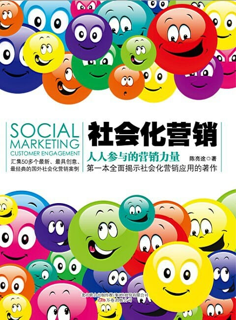

注：【】部分为笔者心得，非原文摘抄。
- 企业和品牌要变成社会化品牌（Social Brand），跟消费者“社交”起来：聊天、互动、玩游戏、开玩笑、放下身段，让品牌活在人群里，成为一个鲜活的品牌（Living Brand）。
- 大家不是买家和卖家的简单关系，而是朋友关系，是要让消费者成为企业和品牌的粉丝，让他们成为口碑传播者。
- 社会化营销的最大优点是：
- 没有大笔的媒介费用；
- 有精准的受众社群；
- 可以衡量营销效果；
- 回报率非常高。
- 要达到最佳传播效果，就一定要有传播力最大、最远、最有持续性的创意营销规划。
- AISAS 消费者行为分析模型：
- Attention（引起注意）；
- Interest（引起兴趣）；
- Search（进行搜索）；
- Action（购买行动）；
- Share（分享）。
- 社会化营销的 6 个特点：
- 重视自媒体；
- 平等、自由、礼貌地对话；
- 去中心化营销；
- 营销不局限于单一明星用户、单一营销手段、单一营销环节、单一营销平台，而是要有组织、有计划地建立立体营销，层次分明，有主有次，整合资源，合理分配，讲求总体效益；
- 不要死套在一棵树上，营销的森林太大了。
- 巧用关系；
- 鼓励创造；
- 回归人性，突出个性；
- 不要怀疑，立刻行动。
- 【即使是在网上，也要遵守礼仪。建立关系不易，要格外珍惜！】
- 口碑营销，是消费者自动传播产品和服务的良好评价，从而让人们通过口碑了解产品、树立品牌、加强市场认知度，最终达到企业销售产品和提供服务的目的。
- 病毒营销，是信息通过用户的口碑宣传网络像病毒一样传播和扩散，利用快速复制的方式传向更多的受众，通过别人为你宣传，实现“营销杠杆”的作用。
- 要进行社会化媒体下的关系营销，其重点当然是关系，培养关系就是重中之重。
- 与顾客培养关系包括：
- 搜集资料，了解用户；
- 积极对话，加强互动；
- 在现实中巩固网络关系。
- 互联网精神即：开放、平等、协作、分享。
- 成功的社会化媒体营销，内容应该交给用户，让用户更多地参与到企业经营中来。
- 把营销落到每一个个体上，根据个体差异，实现人的营销，个性的营销。
- 企业要把顾客当成有思想、有独特需求的人看待，同时要尊重他们，尊重他们以各种方式发出的声音。
- 创意不需要复杂，简单就是美；创意不需要逻辑，但要达到“哇”的效果，“哇”的声音越大，创意的效果越好；创意可以培养，但不能主观，受众觉得有创意，才是好的创意。
- 如果你期望自己的事业获得成功，就不能只执行其他人的构想，而必须成为能够提出伟大构想的人。——杰弗里·戴尔
- 创意就是打破常规。
- 最简单、最容易明白的，让人一看就懂得创意最高明。
- 创意要与消费者个人建立关系。
- 【创意可以无厘头，但结果不能太离谱。】
- 横向思考把所有的“可能性”都列出来，从不排除任何一个，这样才能鼓励创意。
- 在社会化营销环节里，不只是传达，还要跟消费者深化关系，让顾客拥有品牌、产品、服务、分销渠道等每个触点的话语权，让他们能适度参与，帮助推广。
- 【以内容为中心的应用，要时刻注意简化用户获取和传播内容的操作方法。】
- 真实、透明、坦诚是社交网络成功与否的关键。
- 【千万要协调好广告在用户体验中的影响。】
- 人际的宣传增加了口碑的真实性，关系网强化了信息的亲和力，分享式的传播展示加快了信息的流动，开放平台方便了企业信息的进入；此外，直接的沟通方式，使得企业更显人性、更具魅力。
- 营销设计与分析：
- 营销目标；
- 时机选择；
- 平台选择；
- 创意来源；
- 活动设计；
- 活动规则；
- 奖项设置；
- 沟通平台。
- 用户体验就是永远从用户的角度去想，而不是从网络怎么赚钱的思维、传统媒体如何营销的思维去做自己的产品。
- 企业参与微博营销最大的错误，就是把微博想成是一个推送资料的渠道。——蒂姆·奥赖利、莎拉·米尔斯坦
- 【互联网应用要注意抢占用户的碎片时间。】
- 微博本身具有媒体属性，传播不再是点对点（1:1）、点对面（1:N）传播，而是裂变式的广泛传播（1:N:M）。
- 微博具备 3W 特性（whoever, whenever, wherever），可以全人群、全方位和全时段地发布信息。
- 社会化营销财务回报率 = 营销产生的边际利润 / 投入在营销的边际资源 X 100%
- 口碑传播者不一定是顾客，也可能只是消费的影响者。
- 营销内容必须人性化，没有人喜欢关注一个像机器人一样的企业。
- 内容策略有三个维度：
- 企业要传播的信息；
- 粉丝有兴趣的信息；
- 发布的时机。
- 社会化媒体营销团队每天的常规工作，除了发布原创内容之外，就是要去聆听市场的声音，给出适当的回应，然后把值得分享的内容转发出去。
- 创意营销的规划和操作能力是关键。
- 社会化媒体营销的作用：
- 转化粉丝为潜在顾客；
- 聆听市场，知道市场需求、社会趋势、市场对企业的评价；
- 监控顾客和竞争对手的行为，从而作出反应。
- 很多社交网络营销的企业往往在关键的一步出现了错误，为了粉丝的增多而盲目地用新、奇、特的内容吸引消费者，最后大家对它的认同完全偏离了目标。
- 社交网络的灵魂在于互动。
- 善用有理想的人和组织。
- 社交网络并不是万能的。
- 在视频网站做营销，是做不是广告的广告。
- 视频营销的注意事项：
- 必须要有企业的名称，同时也要有主题；
- 视频标签；
- 沟通；
- 效果；
- 长度（1-5 分钟最好）；
- 互动。
- 一个投诉的顾客其实代表了更多做生意的机会。——齐格·金克拉
- LBS 传统模式的核心是签到，通过虚拟签到，用户分享个人地理信息，商家便可以根据签到信息锁定目标用户，对此进行有的放矢的精准营销。
- LBS 营销不只是优惠信息推送。
- 【积极、诚恳、明智地面对负面信息。】
- 社交网站要具备以下特点：
- 交往的广域性与开放性；
- 网络的匿名性和彻底的符号性；
- 社群关系松散，人员流动频繁；
- 社区地位平等。
- 社交网站在网络营销中作用斐然的关键点：
- 直接对话、加强沟通；
- 建立关系、参与互动；
- 口碑营销、信息传播；
- 自我表达、公关工具；
- 声誉管理、危机处理；
- 在线调查、市场调研；
- 优越的网络营销场所；
- 进行销售、服务顾客；
- 建立品牌差异，提高竞争力。
- 成功的企业，会利用不同的线上线下平台，作为面对不同目标社群的营销渠道，借此发挥协同效应，让传播力度从一个点扩展到一条线，以及一个更大的层面。
- 除了做正确的事情之外，最重要的是要让别人知道你做了正确的事情。——约翰·洛克菲勒
- 对任何企业来说，整合式营销才是王道！
- 企业要说自己的话，也要让社群有一个地方能够发出声音；企业要单向公布营销信息，也要让关注自己的社群能够做口碑营销。这样，营销的功效才能够发挥到极致。
- 要把效益扩张到最大，就一定要靠无比的创意！
- 面对未来的时候，只会有三种人出现：一种是让它自然发生的人，一种是使它发生的人，最后一种是在想发生了什么的人。——小约翰·理查森
- 【用户不一定总是对的，但任何情况下都应该尊重用户。】
- 以出版人的角度而不是以营销人员的角度去思考。——大卫·斯科特